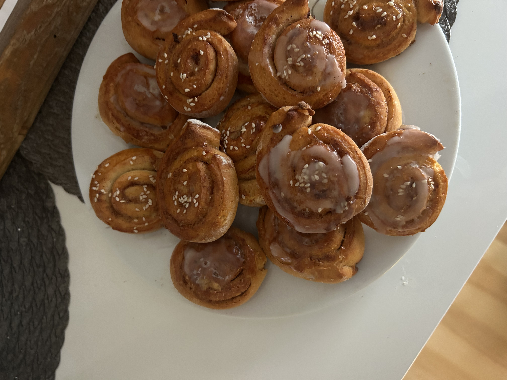
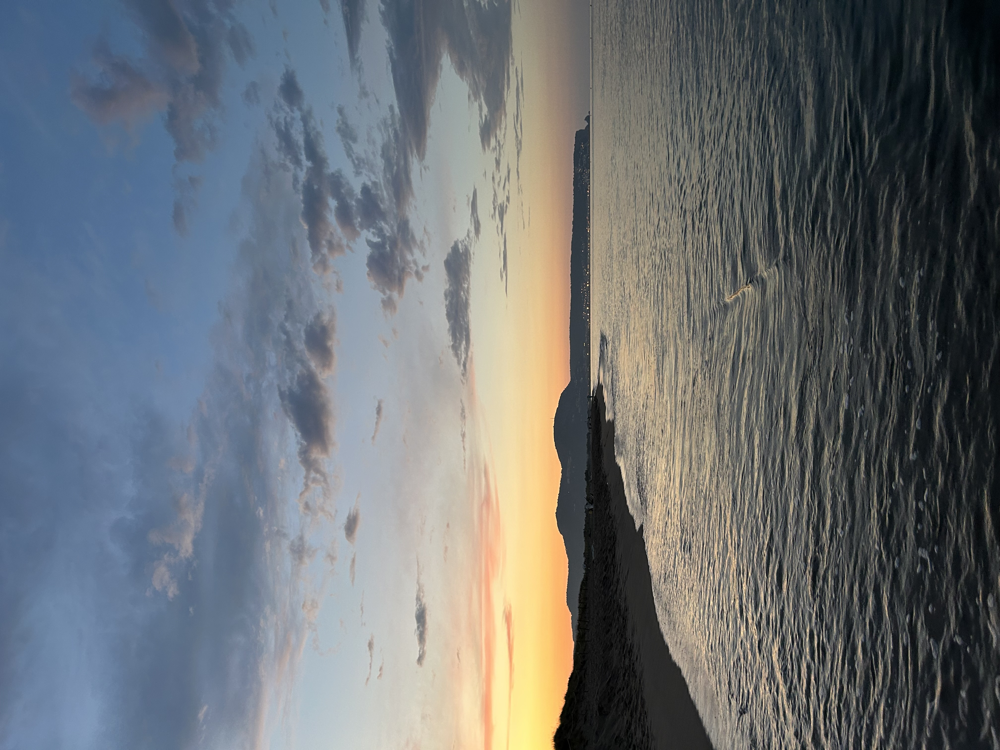
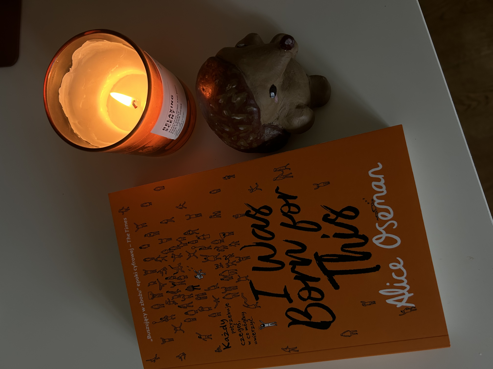
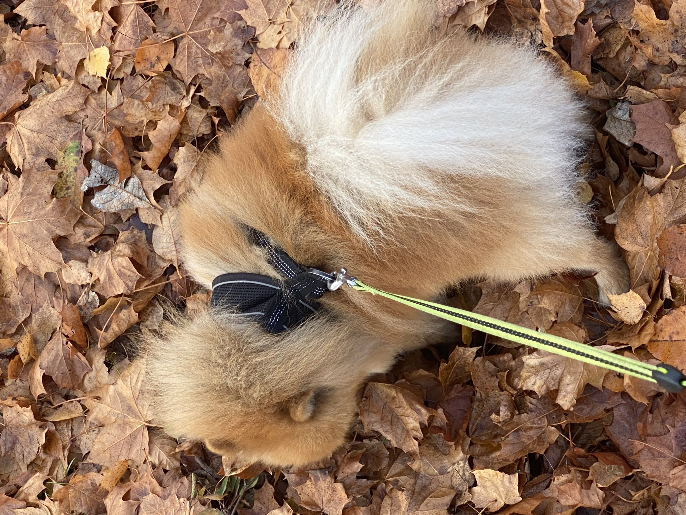
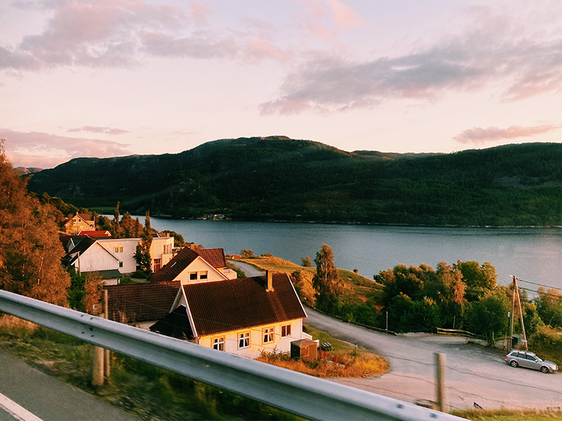
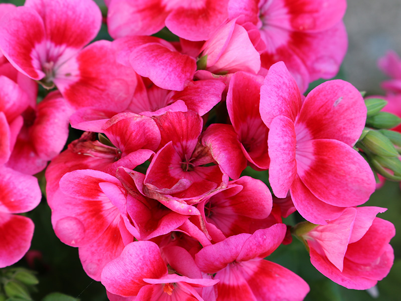
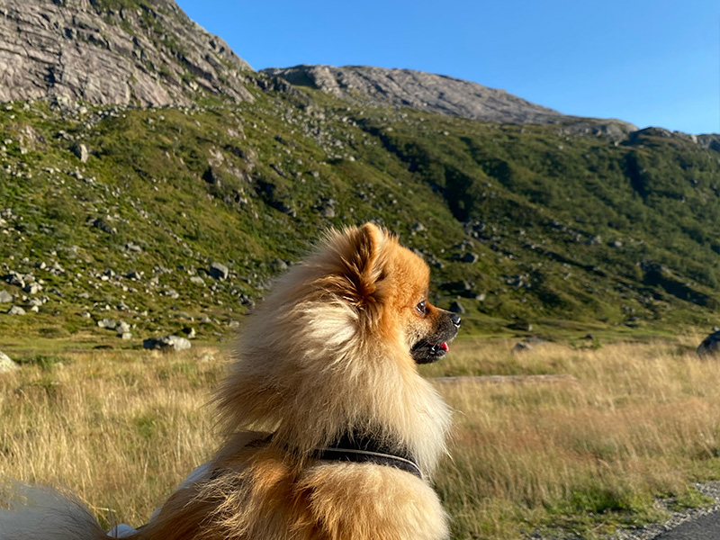

Nå er jeg andre året medieproduksjon.
Jeg er 17 år, født 9. juni 2006 og bor i Sarpsborg. Jeg elsker dyr, grafisk design
og musikk.
Ting jeg liker å gjøre etter skolen

Lage mat

Fotografere

Lese

Gå tur med Rayo
Fremtidige planer
Nå går jeg 2.året medieproduksjon på Glemmen VGS. Jeg er veldig fornøyd med
valget
mitt.
Målet mitt er å bli en mediedesigner.
Utvikling og design er spennende, det er utrolig hva man kan
lage i diverse Adobeprogrammer.
Jeg angrer ikke på valget mitt.
For å nå målet mitt må jeg fortsette å gjøre mitt beste, øve og fortsette å uttryke meg selv
via
arbeidet mitt.
Neste steget nå er en lærlingsplass og et fagbrev. Gleder meg!
Utdannelsen min så langt:
Sandesundsveien Barneskole
2017 - 2019
Grålum Barneskole
2019 - 2019
Grålum Ungdomsskole
2019 - 2022
Glemmen Vgs
2022 - Nå



Hundepasser
Jeg gikk tur med en hund Ted to, ofte tre ganger i uka.
Det var alltid mellom klokka 17 og 18. Eiere bodde nærme meg.
Jeg tjente 100-200kr i timen. Han var veldig blid og leken og måtte alltid lukte på alt
han så.
Jobben lærte meg å komme tidsnok, være mer tålmodig og åpen for nye ting.
Jeg gikk tur med han fra 2019 fram til Januar 2021.
Jeg var nødt til å slutte etter at jeg flyttet til et nytt hus.
Barnehageassistent
Jeg jobbet som en assistent i en barnehage i Sarpsborg sentrum.
Jeg var en ekstra par hender der lærere trenger det.
Det var en veldig spennende jobb.
Jeg ble med på to turer til skogen hvor vi spiste grøt og lekte i snøen.
Barna trenger mye oppmerksomhet og tålmodighet. Man må gjøre alt for at barna føler seg
inkludert og hørt.
Barna lærte meg tålmodighet og viste meg en mer fargerik og fantasifull livssyn:)
Polsk
Norsk
Engelsk
Adobe Illustrator
Jeg er polsk og det er morsmålet mitt. Jeg lærte norsk på skolen, samme med engelsk.
Per nå er jeg på god vei til å virkelig kunne Adobe Illustrator. Jeg er også kjent med
InDesign og Photoshop.
Målet mitt er å kunne alle overnevnte programmer innen skoleåret er slutt i tilleg til Adobe
Express.